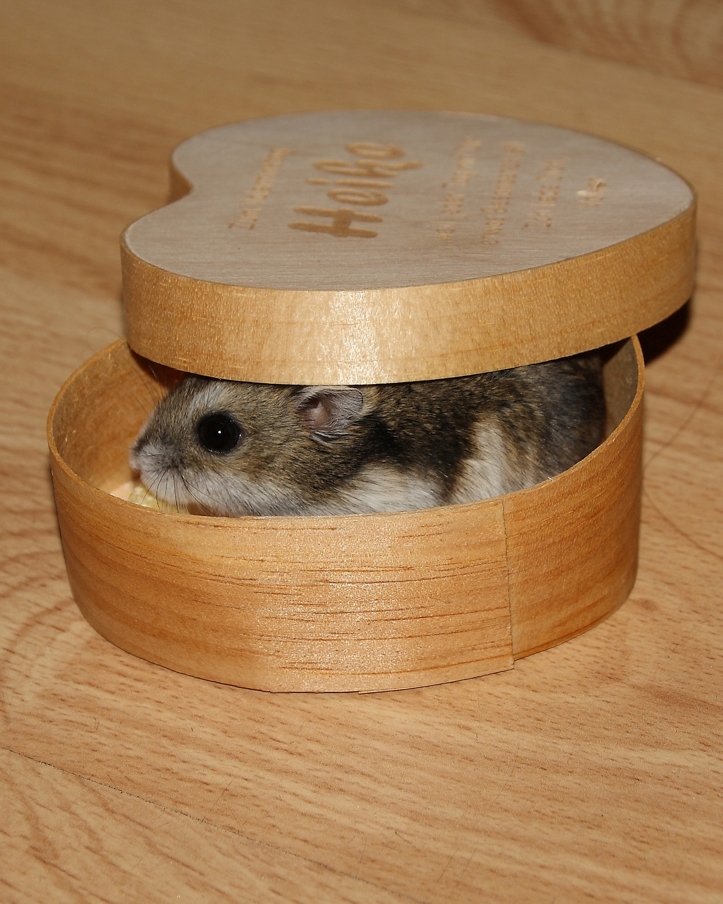
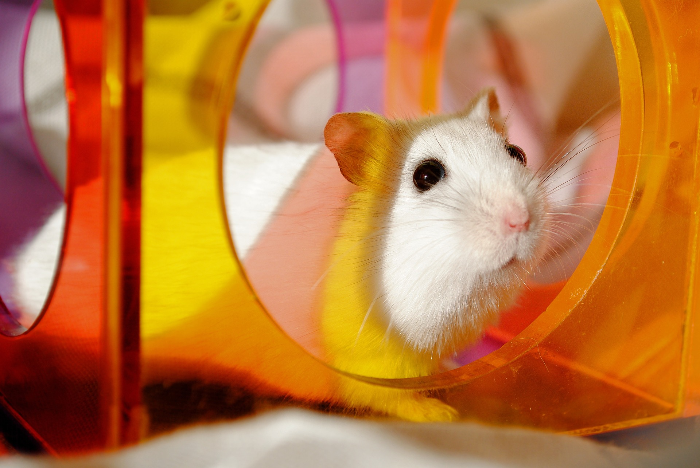

윈터 화이트 햄스터는 1773년 중국의 북서부인 신강성, 남부 알타이 산맥의 지류인 준가얼 분지(중가리아 분지)에서 팔라스에 의해 최초로 발견되었다. 카자흐스탄의 동부와 시베리아 남서쪽에 걸친 초원지대 혹은 경작지에 서식하며, 생김새가 비슷한 캠벨 러시안 햄스터와는 달리 겨울이 되면 털이 하얗게 변하는 특징이 있기 때문에 윈터 화이트(Winter White) 햄스터라고 불리며, 발견지인 준가얼 분지의 이름을 따서 장가리안 또는 정글리안(Djungarian)이라고 부르기도 한다. 1960년대에 들어서 독일의 막스 플랑크 연구소의 연구원인 클라우스 호프만에 의해 애완용으로 선보였고 몸길이는 10~12센티미터, 몸무게는 20~60그램 정도이다.